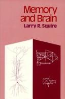

Memory and Brain
Book·Larry R. Squire, 1987·记忆与脑

Squire reviews evidence from brain damage and animal studies, and shows that memory consists of several systems that depend on different brain regions.
- Author
- Larry R. Squire
- Year
- 1987
- Difficulty
- Advanced
- Kind
- Overview
- Schools
- Neuropsychology
- Core theories
- Multiple Memory Systems
Editions
- English edition Memory and Brain Larry R. Squire · Oxford University Press, first edition · 1987 Open Library ↗